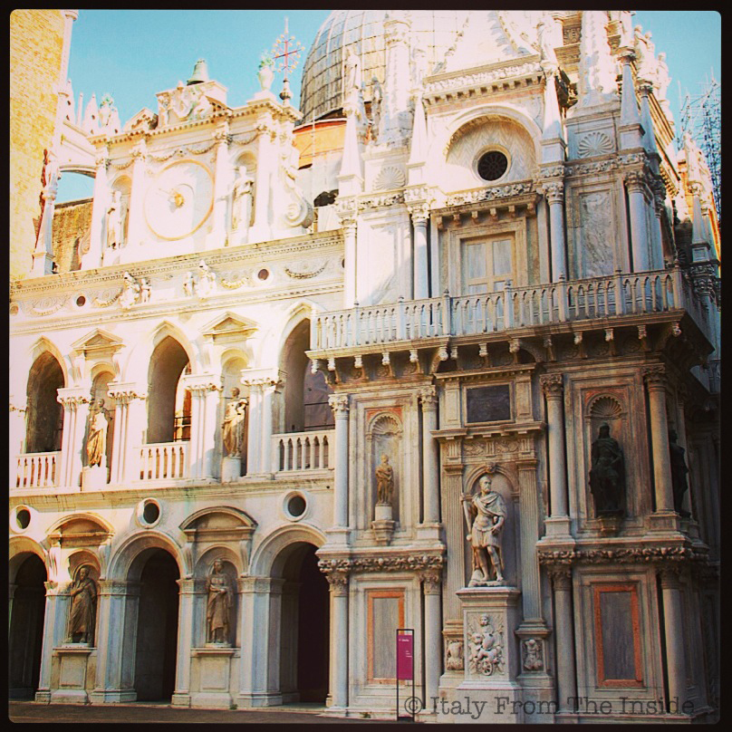
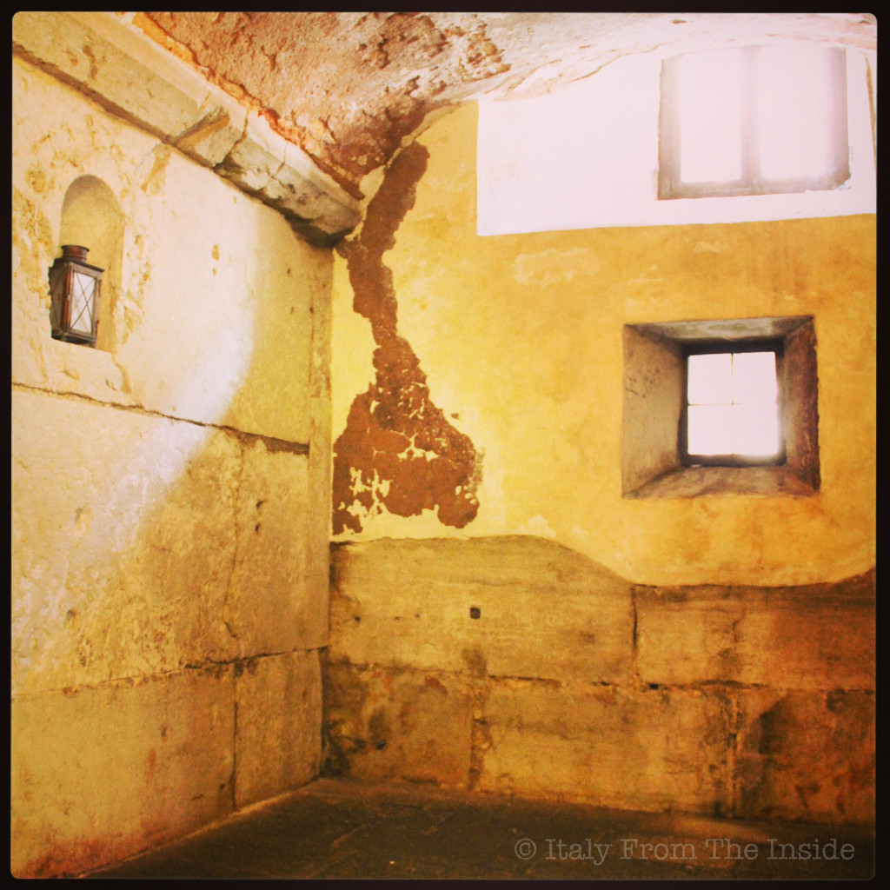
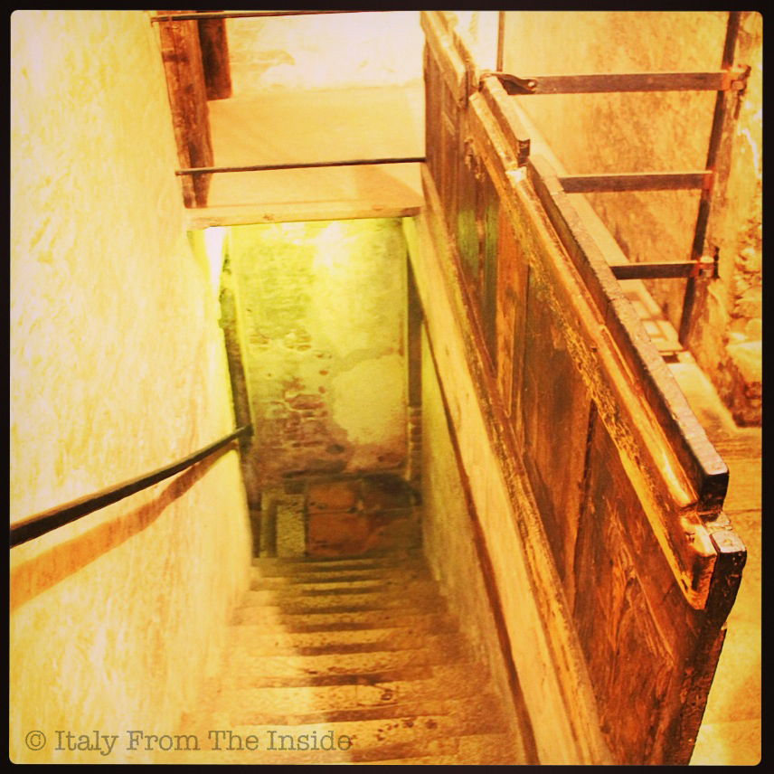
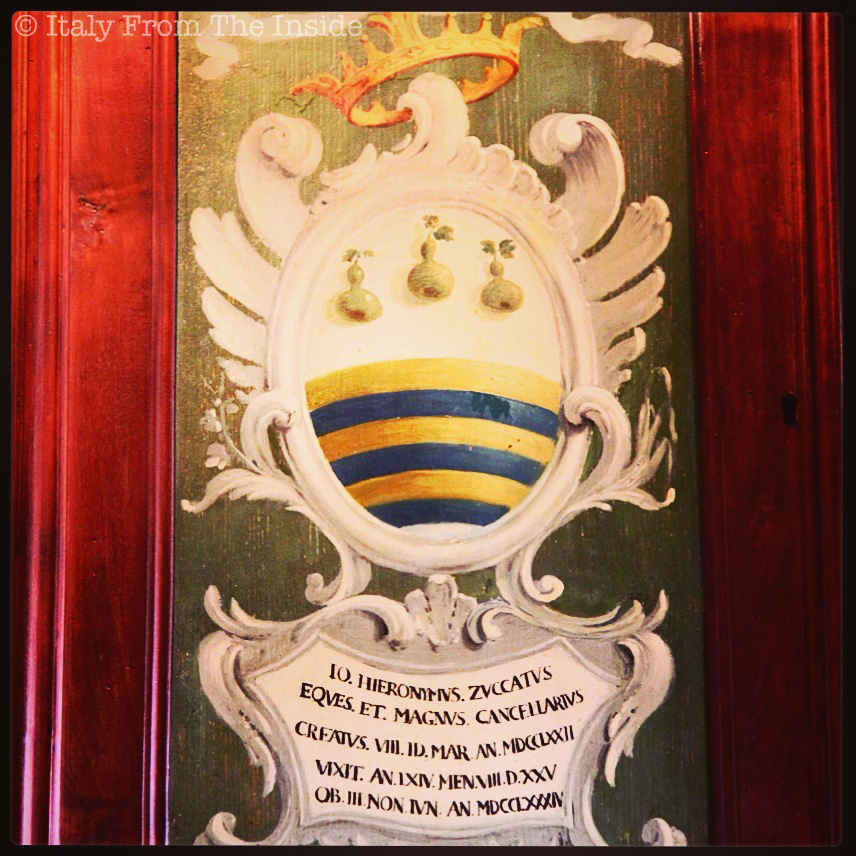
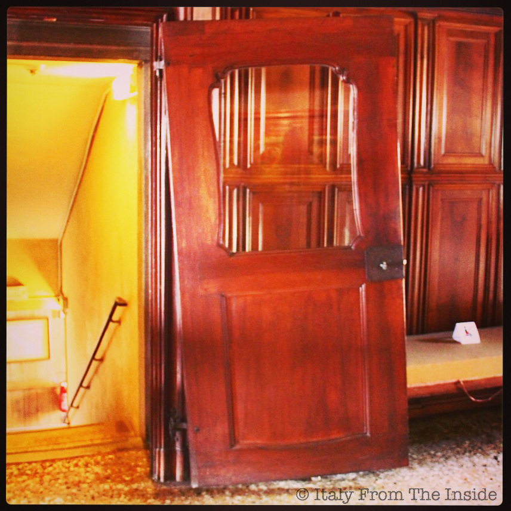
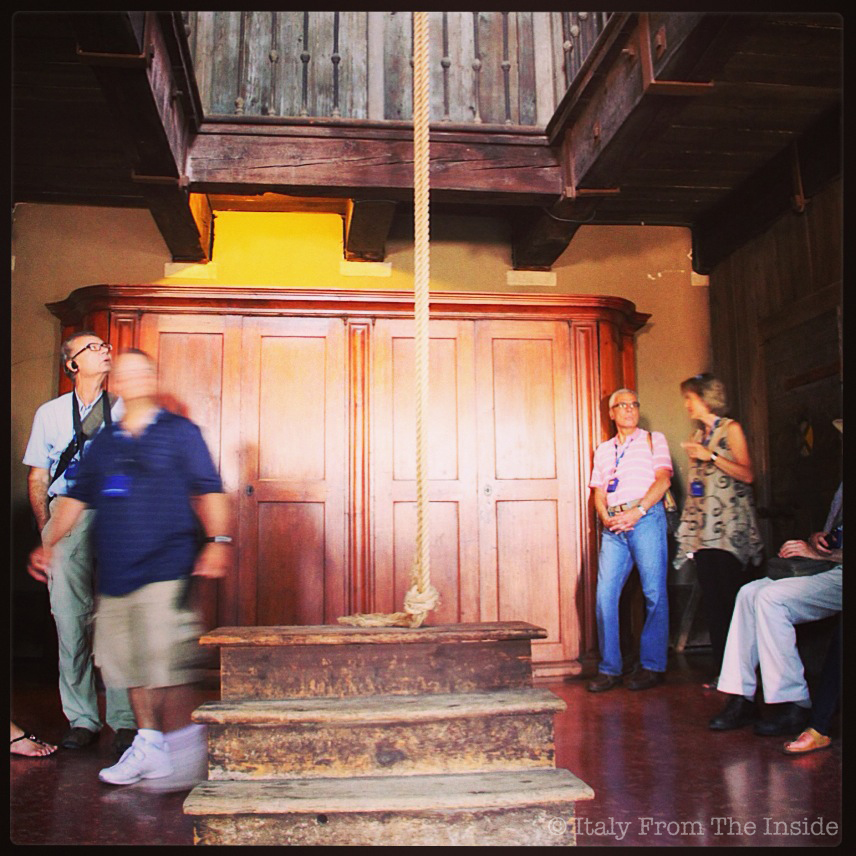
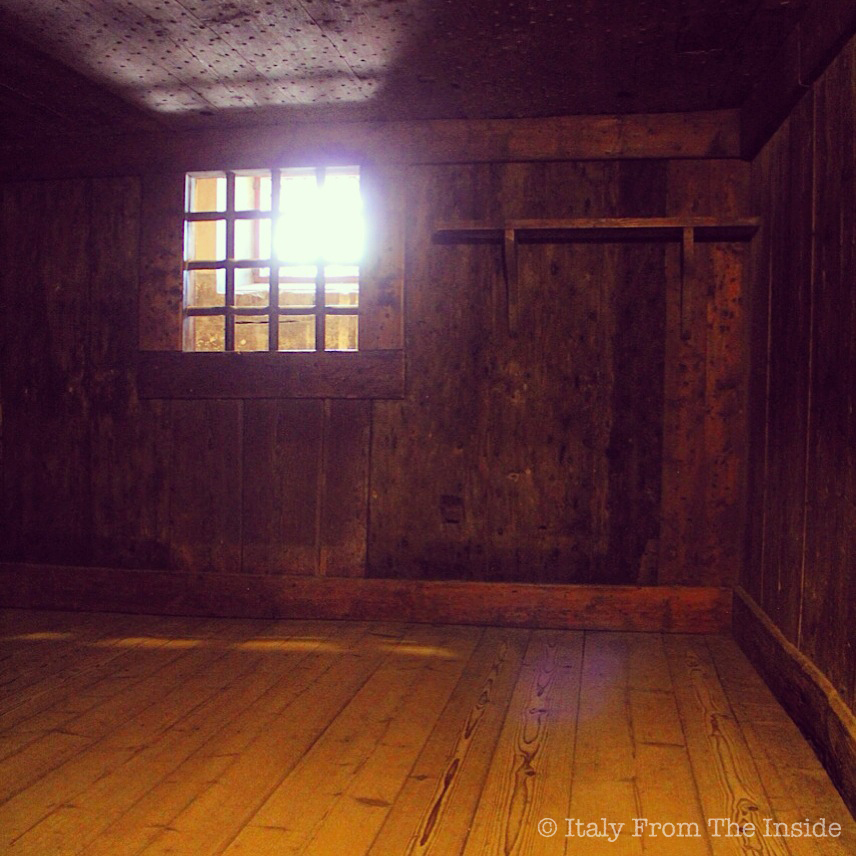
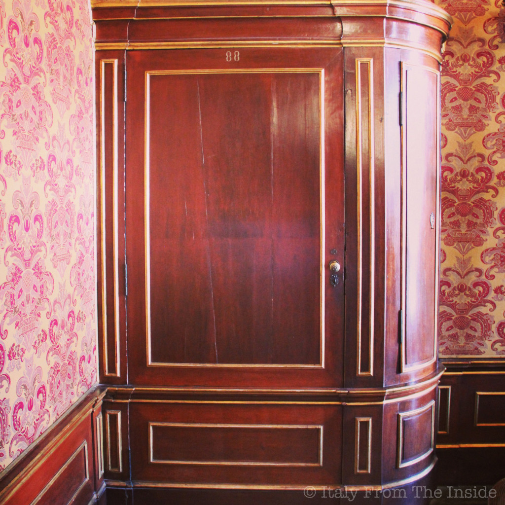
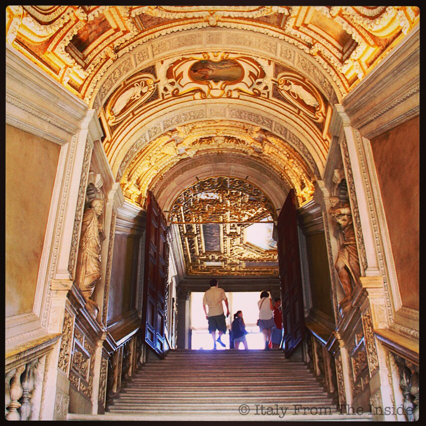

The tour starts with a brief (I love brief) introduction of the history of Venice. We are all gathered in the palazzo's courtyard, where our guide explains us that the Doge was purposely elected when he was elderly to guarantee a quick renewal of powers (I like this). She also says that all the winged lions we see around Venice are reproductions, because Napoleon had the originals removed when he invaded the Republic of Venice (I don't like this).
Then she pulls out a key and asks us to follow her to that part of the palace exclusively reserved to our group. Feeling privileged, we follow her and enter into a narrow hallway open on one side to many prison cells. A man jokingly protests that he did nothing to deserve prison time, while a lady seriously states that she needs to get out, because the small spaces make her feel uncomfortable. We'll meet with her a couple of floors upstairs.
The spaces are indeed small. Some cells have windows while others don't. But that was probably the least discomfort since humidity, fires and rats were the prisoners' worst nightmare. However, their meals always included wine, which obviously was very much appreciated.

Walking to the upper floor through a staircase that can be closed with a sort of horizontal door, our guide points out that all the cells are marked by Roman numbers written upside down. To these days nobody knows why they used to invert the numbers.
After passing by more tiny prison cells and walking through more narrow corridors, we finally arrive into a beautiful, wide room that we learn was the chancellor's office. The Cancelliere was a key person for Venice. He was in charge of protecting the Republic from riots, spies, and any sort of dangers that could affect its stability. He was very well paid (something like today's $40,000 a month!) and needed to make sure that each important document was written in three copies to be kept in three different places to avoid total loss. Pictured above is the blazon of chancellor Hieronimus Zuccatus (Geronimo Zuccato), whose last name comes from the word zucca, meaning pumpkin, thus the three pumpkins in his coat-of-arms. Our guide makes us notice that each blazon has a symbol related to the chancellor's last name. Interesting.
What you see above is not the result of an installation mistake, but of a sinking floor. All floors in the palazzo were made of wood. And they actually still are under the terrazzo alla veneziana (a mix of chips of marble or granite set in concrete). However, as the floor sinks, the doors get crooked, like this one and many more in the palace.
Obviously a prison cannot be complete without a torture chamber. The prisoners's hands were tied in the back and slowly lifted to inflict pain and obtain a confession. They were doing this in the dark, since they realized that people confess more easily when their faces cannot be seen.
However, one of the most interesting rooms is the cell where legendary Latin lover Giacomo (James) Casanova was imprisoned and from where he tried to escape. Casanova was a charming man, able to easily enchant women and befriend important men. We learn that one of these friends suggested him to leave Venice as soon as possible because he was suspected to be a spy and was risking to be imprisoned as a result. But Giacomo refused because he was too close to finally conquer the love of a woman (of course, he is Casanova!). And sure enough, he was caught and thrown in jail. However, his "residency" was privileged because he was allowed to bring furniture, clothing and food from outside. Nevertheless, the cell he was staying in was too small for him. He was 1.97m-6.4ft tall and he couldn't even stand straight. Finally one day he started to plan his escape... The story goes on and is packed with turns of events and curiosities (such as the fact that he didn't have a pen and used his ear wax to write on paper and communicate with another cell mate. I know, yuck!)
After an hour or so we come out from a door disguised as a wardrobe and enter the public areas again, leaving behind the secret world of the Palazzo del Doge.
Now we can visit the rest of the palace on our own and walk upstairs through the Scala d'Oro (Golden Staircase) towards the Ponte dei Sospiri (the Bridge of Sighs), named like this because prisoners would sigh seeing Venice for the last time before their imprisonment. Needless to say that visiting the Palazzo Ducale is well worth for many aspects. However, being able to see its secret chambers is a must. What I wrote is only a little assaggio (taste) of the actual experience and information learned. Besides, this tour in particular is focusing on the curiosities and interesting aspects of the palace rather than on dates and historical events (which is a type of information that, at least for a person like me, enters one ear and goes out the other). CityWonders offers a great selection of tours in the major Italian cities. One I was also very tempted to take is the Secret Venice by night Walking Tour and Gondola Ride. Another "secret", another Venice, another time.